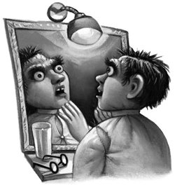

They stepped off the stone staircase at the top, and Professor McGonagall rapped on the door. It opened silently and they entered. Professor McGonagall told Harry to wait and left him there, alone.
Harry looked around. One thing was certain: of all the teachers’ offices Harry had visited so far this year, Dumbledore’s was by far the most interesting. If he hadn’t been scared out of his wits that he was about to be thrown out of school, he would have been very pleased to have a chance to look around it.
It was a large and beautiful circular room, full of funny little noises. A number of curious silver instruments stood on spindle-legged tables, whirring and emitting little puffs of smoke. The walls were covered with portraits of old headmasters and headmistresses, all of whom were snoozing gently in their frames. There was also an enormous, claw-footed desk, and, sitting on a shelf behind it, a shabby, tattered wizard’s hat — the Sorting Hat.
Harry hesitated. He cast a wary eye around the sleeping witches and wizards on the walls. Surely it couldn’t hurt if he took the hat down and tried it on again? Just to see . . . just to make sure it had put him in the right House —
He walked quietly around the desk, lifted the hat from its shelf, and lowered it slowly onto his head. It was much too large and slipped down over his eyes, just as it had done the last time he’d put it on. Harry stared at the black inside of the hat, waiting. Then a small voice said in his ear, “Bee in your bonnet, Harry Potter?”
“Er, yes,” Harry muttered. “Er — sorry to bother you — I wanted to ask —”
“You’ve been wondering whether I put you in the right House,” said the hat smartly. “Yes . . . you were particularly difficult to place. But I stand by what I said before” — Harry’s heart leapt — “you would have done well in Slytherin —”
Harry’s stomach plummeted. He grabbed the point of the hat and pulled it off. It hung limply in his hand, grubby and faded. Harry pushed it back onto its shelf, feeling sick.
“You’re wrong,” he said aloud to the still and silent hat. It didn’t move. Harry backed away, watching it. Then a strange, gagging noise behind him made him wheel around.
He wasn’t alone after all. Standing on a golden perch behind the door was a decrepit-looking bird that resembled a half-plucked turkey. Harry stared at it and the bird looked balefully back, making its gagging noise again. Harry thought it looked very ill. Its eyes were dull and, even as Harry watched, a couple more feathers fell out of its tail.
Harry was just thinking that all he needed was for Dumbledore’s pet bird to die while he was alone in the office with it, when the bird burst into flames.
Harry yelled in shock and backed away into the desk. He looked feverishly around in case there was a glass of water somewhere but couldn’t see one; the bird, meanwhile, had become a fireball; it gave one loud shriek and next second there was nothing but a smoldering pile of ash on the floor.
The office door opened. Dumbledore came in, looking very somber.
“Professor,” Harry gasped. “Your bird — I couldn’t do anything — he just caught fire —”
To Harry’s astonishment, Dumbledore smiled.
“About time, too,” he said. “He’s been looking dreadful for days; I’ve been telling him to get a move on.”
He chuckled at the stunned look on Harry’s face.
“Fawkes is a phoenix, Harry. Phoenixes burst into flame when it is time for them to die and are reborn from the ashes. Watch him . . .”
Harry looked down in time to see a tiny, wrinkled, newborn bird poke its head out of the ashes. It was quite as ugly as the old one.
“It’s a shame you had to see him on a Burning Day,” said Dumbledore, seating himself behind his desk. “He’s really very handsome most of the time, wonderful red and gold plumage. Fascinating creatures, phoenixes. They can carry immensely heavy loads, their tears have healing powers, and they make highly faithful pets.”
In the shock of Fawkes catching fire, Harry had forgotten what he was there for, but it all came back to him as Dumbledore settled himself in the high chair behind the desk and fixed Harry with his penetrating, light-blue stare.
Before Dumbledore could speak another word, however, the door of the office flew open with an almighty bang and Hagrid burst in, a wild look in his eyes, his balaclava perched on top of his shaggy black head and the dead rooster still swinging from his hand.
“It wasn’ Harry, Professor Dumbledore!” said Hagrid urgently. “I was talkin’ ter him seconds before that kid was found, he never had time, sir —”
Dumbledore tried to say something, but Hagrid went ranting on, waving the rooster around in his agitation, sending feathers everywhere.
“— it can’t’ve bin him, I’ll swear it in front o’ the Ministry o’ Magic if I have to —”
“Hagrid, I —”
“— yeh’ve got the wrong boy, sir, I know Harry never —”
“Hagrid!” said Dumbledore loudly. “I do not think that Harry attacked those people.”
“Oh,” said Hagrid, the rooster falling limply at his side. “Right. I’ll wait outside then, Headmaster.”
And he stomped out looking embarrassed.
“You don’t think it was me, Professor?” Harry repeated hopefully as Dumbledore brushed rooster feathers off his desk.
“No, Harry, I don’t,” said Dumbledore, though his face was somber again. “But I still want to talk to you.”
Harry waited nervously while Dumbledore considered him, the tips of his long fingers together.
“I must ask you, Harry, whether there is anything you’d like to tell me,” he said gently. “Anything at all.”
Harry didn’t know what to say. He thought of Malfoy shouting, “You’ll be next, Mudbloods!” and of the Polyjuice Potion simmering away in Moaning Myrtle’s bathroom. Then he thought of the disembodied voice he had heard twice and remembered what Ron had said: “Hearing voices no one else can hear isn’t a good sign, even in the Wizarding world.” He thought, too, about what everyone was saying about him, and his growing dread that he was somehow connected with Salazar Slytherin. . . .
“No,” said Harry. “There isn’t anything, Professor. . . .”
The double attack on Justin and Nearly Headless Nick turned what had hitherto been nervousness into real panic. Curiously, it was Nearly Headless Nick’s fate that seemed to worry people most. What could possibly do that to a ghost? people asked each other; what terrible power could harm someone who was already dead? There was almost a stampede to book seats on the Hogwarts Express so that students could go home for Christmas.
“At this rate, we’ll be the only ones left,” Ron told Harry and Hermione. “Us, Malfoy, Crabbe, and Goyle. What a jolly holiday it’s going to be.”
Crabbe and Goyle, who always did whatever Malfoy did, had signed up to stay over the holidays, too. But Harry was glad that most people were leaving. He was tired of people skirting around him in the corridors, as though he were about to sprout fangs or spit poison; tired of all the muttering, pointing, and hissing as he passed.
Fred and George, however, found all this very funny. They went out of their way to march ahead of Harry down the corridors, shouting, “Make way for the Heir of Slytherin, seriously evil wizard coming through. . . .”
Percy was deeply disapproving of this behavior.
“It is not a laughing matter,” he said coldly.
“Oh, get out of the way, Percy,” said Fred. “Harry’s in a hurry.”
“Yeah, he’s off to the Chamber of Secrets for a cup of tea with his fanged servant,” said George, chortling.
Ginny didn’t find it amusing either.
“Oh, don’t,” she wailed every time Fred asked Harry loudly who he was planning to attack next, or when George pretended to ward Harry off with a large clove of garlic when they met.
Harry didn’t mind; it made him feel better that Fred and George, at least, thought the idea of his being Slytherin’s heir was quite ludicrous. But their antics seemed to be aggravating Draco Malfoy, who looked increasingly sour each time he saw them at it.
“It’s because he’s bursting to say it’s really him,” said Ron knowingly. “You know how he hates anyone beating him at anything, and you’re getting all the credit for his dirty work.”
“Not for long,” said Hermione in a satisfied tone. “The Polyjuice Potion’s nearly ready. We’ll be getting the truth out of him any day now.”
At last the term ended, and a silence deep as the snow on the grounds descended on the castle. Harry found it peaceful, rather than gloomy, and enjoyed the fact that he, Hermione, and the Weasleys had the run of Gryffindor Tower, which meant they could play Exploding Snap loudly without bothering anyone, and practice dueling in private. Fred, George, and Ginny had chosen to stay at school rather than visit Bill in Egypt with Mr. and Mrs. Weasley. Percy, who disapproved of what he termed their childish behavior, didn’t spend much time in the Gryffindor common room. He had already told them pompously that he was only staying over Christmas because it was his duty as a prefect to support the teachers during this troubled time.
Christmas morning dawned, cold and white. Harry and Ron, the only ones left in their dormitory, were woken very early by Hermione, who burst in, fully dressed and carrying presents for them both.
“Wake up,” she said loudly, pulling back the curtains at the window.
“Hermione — you’re not supposed to be in here —” said Ron, shielding his eyes against the light.
“Merry Christmas to you, too,” said Hermione, throwing him his present. “I’ve been up for nearly an hour, adding more lacewings to the potion. It’s ready.”
Harry sat up, suddenly wide awake.
“Are you sure?”
“Positive,” said Hermione, shifting Scabbers the rat so that she could sit down on the end of Ron’s four-poster. “If we’re going to do it, I say it should be tonight.”
At that moment, Hedwig swooped into the room, carrying a very small package in her beak.
“Hello,” said Harry happily as she landed on his bed. “Are you speaking to me again?”
She nibbled his ear in an affectionate sort of way, which was a far better present than the one that she had brought him, which turned out to be from the Dursleys. They had sent Harry a toothpick and a note telling him to find out whether he’d be able to stay at Hogwarts for the summer vacation, too.
The rest of Harry’s Christmas presents were far more satisfactory. Hagrid had sent him a large tin of treacle toffee, which Harry decided to soften by the fire before eating; Ron had given him a book called Flying with the Cannons, a book of interesting facts about his favorite Quidditch team, and Hermione had bought him a luxury eagle-feather quill. Harry opened the last present to find a new, hand-knitted sweater from Mrs. Weasley and a large plum cake. He read her card with a fresh surge of guilt, thinking about Mr. Weasley’s car (which hadn’t been seen since its crash with the Whomping Willow), and the bout of rule-breaking he and Ron were planning next.
No one, not even someone dreading taking Polyjuice Potion later, could fail to enjoy Christmas dinner at Hogwarts.
The Great Hall looked magnificent. Not only were there a dozen frost-covered Christmas trees and thick streamers of holly and mistletoe crisscrossing the ceiling, but enchanted snow was falling, warm and dry, from the ceiling. Dumbledore led them in a few of his favorite carols, Hagrid booming more and more loudly with every goblet of eggnog he consumed. Percy, who hadn’t noticed that Fred had bewitched his prefect badge so that it now read “Pinhead,” kept asking them all what they were sniggering at. Harry didn’t even care that Draco Malfoy was making loud, snide remarks about his new sweater from the Slytherin table. With a bit of luck, Malfoy would be getting his comeuppance in a few hours’ time.
Harry and Ron had barely finished their third helpings of Christmas pudding when Hermione ushered them out of the hall to finalize their plans for the evening.
“We still need a bit of the people you’re changing into,” said Hermione matter-of-factly, as though she were sending them to the supermarket for laundry detergent. “And obviously, it’ll be best if you can get something of Crabbe’s and Goyle’s; they’re Malfoy’s best friends, he’ll tell them anything. And we also need to make sure the real Crabbe and Goyle can’t burst in on us while we’re interrogating him.
“I’ve got it all worked out,” she went on smoothly, ignoring Harry’s and Ron’s stupefied faces. She held up two plump chocolate cakes. “I’ve filled these with a simple Sleeping Draught. All you have to do is make sure Crabbe and Goyle find them. You know how greedy they are, they’re bound to eat them. Once they’re asleep, pull out a few of their hairs and hide them in a broom closet.”
Harry and Ron looked incredulously at each other.
“Hermione, I don’t think —”
“That could go seriously wrong —”
But Hermione had a steely glint in her eye not unlike the one Professor McGonagall sometimes had.
“The potion will be useless without Crabbe’s and Goyle’s hair,” she said sternly. “You do want to investigate Malfoy, don’t you?”
“Oh, all right, all right,” said Harry. “But what about you? Whose hair are you ripping out?”
“I’ve already got mine!” said Hermione brightly, pulling a tiny bottle out of her pocket and showing them the single hair inside it. “Remember Millicent Bulstrode wrestling with me at the Dueling Club? She left this on my robes when she was trying to strangle me! And she’s gone home for Christmas — so I’ll just have to tell the Slytherins I’ve decided to come back.”
When Hermione had bustled off to check on the Polyjuice Potion again, Ron turned to Harry with a doom-laden expression.
“Have you ever heard of a plan where so many things could go wrong?”
But to Harry’s and Ron’s utter amazement, stage one of the operation went just as smoothly as Hermione had said. They lurked in the deserted entrance hall after Christmas tea, waiting for Crabbe and Goyle who had remained alone at the Slytherin table, shoveling down fourth helpings of trifle. Harry had perched the chocolate cakes on the end of the banisters. When they spotted Crabbe and Goyle coming out of the Great Hall, Harry and Ron hid quickly behind a suit of armor next to the front door.
“How thick can you get?” Ron whispered ecstatically as Crabbe gleefully pointed out the cakes to Goyle and grabbed them. Grinning stupidly, they stuffed the cakes whole into their large mouths. For a moment, both of them chewed greedily, looks of triumph on their faces. Then, without the smallest change of expression, they both keeled over backward onto the floor.
By far the hardest part was hiding them in the closet across the hall. Once they were safely stowed among the buckets and mops, Harry yanked out a couple of the bristles that covered Goyle’s forehead and Ron pulled out several of Crabbe’s hairs. They also stole their shoes, because their own were far too small for Crabbe- and Goyle-size feet. Then, still stunned at what they had just done, they sprinted up to Moaning Myrtle’s bathroom.
They could hardly see for the thick black smoke issuing from the stall in which Hermione was stirring the cauldron. Pulling their robes up over their faces, Harry and Ron knocked softly on the door.
“Hermione?”
They heard the scrape of the lock and Hermione emerged, shiny-faced and looking anxious. Behind her they heard the gloop gloop of the bubbling, glutinous potion. Three glass tumblers stood ready on the toilet seat.
“Did you get them?” Hermione asked breathlessly.
Harry showed her Goyle’s hair.
“Good. And I sneaked these spare robes out of the laundry,” Hermione said, holding up a small sack. “You’ll need bigger sizes once you’re Crabbe and Goyle.”
The three of them stared into the cauldron. Close up, the potion looked like thick, dark mud, bubbling sluggishly.
“I’m sure I’ve done everything right,” said Hermione, nervously rereading the splotched page of Moste Potente Potions. “It looks like the book says it should . . . once we’ve drunk it, we’ll have exactly an hour before we change back into ourselves.”
“Now what?” Ron whispered.
“We separate it into three glasses and add the hairs.”
Hermione ladled large dollops of the potion into each of the glasses. Then, her hand trembling, she shook Millicent Bulstrode’s hair out of its bottle into the first glass.
The potion hissed loudly like a boiling kettle and frothed madly. A second later, it had turned a sick sort of yellow.
“Urgh — essence of Millicent Bulstrode,” said Ron, eyeing it with loathing. “Bet it tastes disgusting.”
“Add yours, then,” said Hermione.
Harry dropped Goyle’s hair into the middle glass and Ron put Crabbe’s into the last one. Both glasses hissed and frothed: Goyle’s turned the khaki color of a booger, Crabbe’s a dark, murky brown.
“Hang on,” said Harry as Ron and Hermione reached for their glasses. “We’d better not all drink them in here. . . . Once we turn into Crabbe and Goyle we won’t fit. And Millicent Bulstrode’s no pixie.”
“Good thinking,” said Ron, unlocking the door. “We’ll take separate stalls.”
Careful not to spill a drop of his Polyjuice Potion, Harry slipped into the middle stall.
“Ready?” he called.
“Ready,” came Ron’s and Hermione’s voices.
“One — two — three —”
Pinching his nose, Harry drank the potion down in two large gulps. It tasted like overcooked cabbage.
Immediately, his insides started writhing as though he’d just swallowed live snakes — doubled up, he wondered whether he was going to be sick — then a burning sensation spread rapidly from his stomach to the very ends of his fingers and toes — next, bringing him gasping to all fours, came a horrible melting feeling, as the skin all over his body bubbled like hot wax — and before his eyes, his hands began to grow, the fingers thickened, the nails broadened, the knuckles were bulging like bolts — his shoulders stretched painfully and a prickling on his forehead told him that hair was creeping down toward his eyebrows — his robes ripped as his chest expanded like a barrel bursting its hoops — his feet were agony in shoes four sizes too small —
As suddenly as it had started, everything stopped. Harry lay facedown on the stone-cold floor, listening to Myrtle gurgling morosely in the end toilet. With difficulty, he kicked off his shoes and stood up. So this was what it felt like, being Goyle. His large hand trembling, he pulled off his old robes, which were hanging a foot above his ankles, pulled on the spare ones, and laced up Goyle’s boatlike shoes. He reached up to brush his hair out of his eyes and met only the short growth of wiry bristles, low on his forehead. Then he realized that his glasses were clouding his eyes because Goyle obviously didn’t need them — he took them off and called, “Are you two okay?” Goyle’s low rasp of a voice issued from his mouth.
“Yeah,” came the deep grunt of Crabbe from his right.
Harry unlocked his door and stepped in front of the cracked mirror. Goyle stared back at him out of dull, deepset eyes. Harry scratched his ear. So did Goyle.
Ron’s door opened. They stared at each other. Except that he looked pale and shocked, Ron was indistinguishable from Crabbe, from the pudding-bowl haircut to the long, gorilla arms.
“This is unbelievable,” said Ron, approaching the mirror and prodding Crabbe’s flat nose. “Unbelievable.”
“We’d better get going,” said Harry, loosening the watch that was cutting into Goyle’s thick wrist. “We’ve still got to find out where the Slytherin common room is. I only hope we can find someone to follow . . .”
Ron, who had been gazing at Harry, said, “You don’t know how bizarre it is to see Goyle thinking.” He banged on Hermione’s door. “C’mon, we need to go —”
A high-pitched voice answered him.
“I — I don’t think I’m going to come after all. You go on without me.”
“Hermione, we know Millicent Bulstrode’s ugly, no one’s going to know it’s you —”
“No — really — I don’t think I’ll come. You two hurry up, you’re wasting time —”
Harry looked at Ron, bewildered.
“That looks more like Goyle,” said Ron. “That’s how he looks every time a teacher asks him a question.”
“Hermione, are you okay?” said Harry through the door.
“Fine — I’m fine — go on —”
Harry looked at his watch. Five of their precious sixty minutes had already passed.
“We’ll meet you back here, all right?” he said.
Harry and Ron opened the door of the bathroom carefully, checked that the coast was clear, and set off.
“Don’t swing your arms like that,” Harry muttered to Ron.
“Eh?”
“Crabbe holds them sort of stiff. . . .”
“How’s this?”
“Yeah, that’s better. . . .”
They went down the marble staircase. All they needed now was a Slytherin that they could follow to the Slytherin common room, but there was nobody around.
“Any ideas?” muttered Harry.
“The Slytherins always come up to breakfast from over there,” said Ron, nodding at the entrance to the dungeons. The words had barely left his mouth when a girl with long, curly hair emerged from the entrance.
“Excuse me,” said Ron, hurrying up to her. “We’ve forgotten the way to our common room.”
“I beg your pardon?” said the girl stiffly. “Our common room? I’m a Ravenclaw.”
She walked away, looking suspiciously back at them.
Harry and Ron hurried down the stone steps into the darkness, their footsteps echoing particularly loudly as Crabbe’s and Goyle’s huge feet hit the floor, feeling that this wasn’t going to be as easy as they had hoped.
The labyrinthine passages were deserted. They walked deeper and deeper under the school, constantly checking their watches to see how much time they had left. After a quarter of an hour, just when they were getting desperate, they heard a sudden movement ahead.
“Ha!” said Ron excitedly. “There’s one of them now!”
The figure was emerging from a side room. As they hurried nearer, however, their hearts sank. It wasn’t a Slytherin, it was Percy.
“What’re you doing down here?” said Ron in surprise.
Percy looked affronted.
“That,” he said stiffly, “is none of your business. It’s Crabbe, isn’t it?”
“Wh — oh, yeah,” said Ron.
“Well, get off to your dormitories,” said Percy sternly. “It’s not safe to go wandering around dark corridors these days.”
“You are,” Ron pointed out.
“I,” said Percy, drawing himself up, “am a prefect. Nothing’s about to attack me.”
A voice suddenly echoed behind Harry and Ron. Draco Malfoy was strolling toward them, and for the first time in his life, Harry was pleased to see him.
“There you are,” he drawled, looking at them. “Have you two been pigging out in the Great Hall all this time? I’ve been looking for you; I want to show you something really funny.”
Malfoy glanced witheringly at Percy.
“And what’re you doing down here, Weasley?” he sneered.
Percy looked outraged.
“You want to show a bit more respect to a school prefect!” he said. “I don’t like your attitude!”
Malfoy sneered and motioned for Harry and Ron to follow him. Harry almost said something apologetic to Percy but caught himself just in time. He and Ron hurried after Malfoy, who said as they turned into the next passage, “That Peter Weasley —”
“Percy,” Ron corrected him automatically.
“Whatever,” said Malfoy. “I’ve noticed him sneaking around a lot lately. And I bet I know what he’s up to. He thinks he’s going to catch Slytherin’s heir single-handed.”
He gave a short, derisive laugh. Harry and Ron exchanged excited looks.
Malfoy paused by a stretch of bare, damp stone wall.
“What’s the new password again?” he said to Harry.
“Er —” said Harry.
“Oh, yeah — pure-blood!” said Malfoy, not listening, and a stone door concealed in the wall slid open. Malfoy marched through it, and Harry and Ron followed him.
The Slytherin common room was a long, low underground room with rough stone walls and ceiling from which round, greenish lamps were hanging on chains. A fire was crackling under an elaborately carved mantelpiece ahead of them, and several Slytherins were silhouetted around it in high-backed chairs.
“Wait here,” said Malfoy to Harry and Ron, motioning them to a pair of empty chairs set back from the fire. “I’ll go and get it — my father’s just sent it to me —”
Wondering what Malfoy was going to show them, Harry and Ron sat down, doing their best to look at home.
Malfoy came back a minute later, holding what looked like a newspaper clipping. He thrust it under Ron’s nose.
“That’ll give you a laugh,” he said.
Harry saw Ron’s eyes widen in shock. He read the clipping quickly, gave a very forced laugh, and handed it to Harry.
It had been clipped out of the Daily Prophet, and it said:
INQUIRY AT THE MINISTRY OF MAGIC
Arthur Weasley, Head of the Misuse of Muggle Artifacts Office, was today fined fifty Galleons for bewitching a Muggle car.
Mr. Lucius Malfoy, a governor of Hogwarts School of Witchcraft and Wizardry, where the enchanted car crashed earlier this year, called today for Mr. Weasley’s resignation.
“Weasley has brought the Ministry into disrepute,” Mr. Malfoy told our reporter. “He is clearly unfit to draw up our laws and his ridiculous Muggle Protection Act should be scrapped immediately.”
Mr. Weasley was unavailable for comment, although his wife told reporters to clear off or she’d set the family ghoul on them.
“Well?” said Malfoy impatiently as Harry handed the clipping back to him. “Don’t you think it’s funny?”
“Ha, ha,” said Harry bleakly.
“Arthur Weasley loves Muggles so much he should snap his wand in half and go and join them,” said Malfoy scornfully. “You’d never know the Weasleys were purebloods, the way they behave.”
Ron’s — or rather, Crabbe’s — face was contorted with fury.
“What’s up with you, Crabbe?” snapped Malfoy.
“Stomachache,” Ron grunted.
“Well, go up to the hospital wing and give all those Mudbloods a kick from me,” said Malfoy, snickering. “You know, I’m surprised the Daily Prophet hasn’t reported all these attacks yet,” he went on thoughtfully. “I suppose Dumbledore’s trying to hush it all up. He’ll be sacked if it doesn’t stop soon. Father’s always said old Dumbledore’s the worst thing that’s ever happened to this place. He loves Muggle-borns. A decent headmaster would never’ve let slime like that Creevey in.”
Malfoy started taking pictures with an imaginary camera and did a cruel but accurate impression of Colin: “‘Potter, can I have your picture, Potter? Can I have your autograph? Can I lick your shoes, please, Potter?’”
He dropped his hands and looked at Harry and Ron.
“What’s the matter with you two?”
Far too late, Harry and Ron forced themselves to laugh, but Malfoy seemed satisfied; perhaps Crabbe and Goyle were always slow on the uptake.
“Saint Potter, the Mudbloods’ friend,” said Malfoy slowly. “He’s another one with no proper wizard feeling, or he wouldn’t go around with that jumped-up Granger Mudblood. And people think he’s Slytherin’s heir!”
Harry and Ron waited with bated breath: Malfoy was surely seconds away from telling them it was him — but then —
“I wish I knew who it is,” said Malfoy petulantly. “I could help them.”
Ron’s jaw dropped so that Crabbe looked even more clueless than usual. Fortunately, Malfoy didn’t notice, and Harry, thinking fast, said, “You must have some idea who’s behind it all. . . .”
“You know I haven’t, Goyle, how many times do I have to tell you?” snapped Malfoy. “And Father won’t tell me anything about the last time the Chamber was opened either. Of course, it was fifty years ago, so it was before his time, but he knows all about it, and he says that it was all kept quiet and it’ll look suspicious if I know too much about it. But I know one thing — last time the Chamber of Secrets was opened, a Mudblood died. So I bet it’s a matter of time before one of them’s killed this time. . . . I hope it’s Granger,” he said with relish.
Ron was clenching Crabbe’s gigantic fists. Feeling that it would be a bit of a giveaway if Ron punched Malfoy, Harry shot him a warning look and said, “D’you know if the person who opened the Chamber last time was caught?”
“Oh, yeah . . . whoever it was was expelled,” said Malfoy. “They’re probably still in Azkaban.”
“Azkaban?” said Harry, puzzled.
“Azkaban — the wizard prison, Goyle,” said Malfoy, looking at him in disbelief. “Honestly, if you were any slower, you’d be going backward.”
He shifted restlessly in his chair and said, “Father says to keep my head down and let the Heir of Slytherin get on with it. He says the school needs ridding of all the Mudblood filth, but not to get mixed up in it. Of course, he’s got a lot on his plate at the moment. You know the Ministry of Magic raided our manor last week?”
Harry tried to force Goyle’s dull face into a look of concern.
“Yeah . . .” said Malfoy. “Luckily, they didn’t find much. Father’s got some very valuable Dark Arts stuff. But luckily, we’ve got our own secret chamber under the drawing-room floor —”
“Ho!” said Ron.
Malfoy looked at him. So did Harry. Ron blushed. Even his hair was turning red. His nose was also slowly lengthening — their hour was up, Ron was turning back into himself, and from the look of horror he was suddenly giving Harry, he must be, too.
They both jumped to their feet.
“Medicine for my stomach,” Ron grunted, and without further ado they sprinted the length of the Slytherin common room, hurled themselves at the stone wall, and dashed up the passage, hoping against hope that Malfoy hadn’t noticed anything. Harry could feel his feet slipping around in Goyle’s huge shoes and had to hoist up his robes as he shrank; they crashed up the steps into the dark entrance hall, which was full of a muffled pounding coming from the closet where they’d locked Crabbe and Goyle. Leaving their shoes outside the closet door, they sprinted in their socks up the marble staircase toward Moaning Myrtle’s bathroom.
“Well, it wasn’t a complete waste of time,” Ron panted, closing the bathroom door behind them. “I know we still haven’t found out who’s doing the attacks, but I’m going to write to Dad tomorrow and tell him to check under the Malfoys’ drawing room.”
Harry checked his face in the cracked mirror. He was back to normal. He put his glasses on as Ron hammered on the door of Hermione’s stall.
“Hermione, come out, we’ve got loads to tell you —”
“Go away!” Hermione squeaked.
Harry and Ron looked at each other.
“What’s the matter?” said Ron. “You must be back to normal by now, we are —”
But Moaning Myrtle glided suddenly through the stall door. Harry had never seen her looking so happy.
“Ooooooh, wait till you see,” she said. “It’s awful —”
They heard the lock slide back and Hermione emerged, sobbing, her robes pulled up over her head.
“What’s up?” said Ron uncertainly. “Have you still got Millicent’s nose or something?”
Hermione let her robes fall and Ron backed into the sink.
Her face was covered in black fur. Her eyes had turned yellow and there were long, pointed ears poking through her hair.
“It was a c-cat hair!” she howled. “M-Millicent Bulstrode m-must have a cat! And the p-potion isn’t supposed to be used for animal transformations!”
“Uh-oh,” said Ron.
“You’ll be teased something dreadful,” said Myrtle happily.
“It’s okay, Hermione,” said Harry quickly. “We’ll take you up to the hospital wing. Madam Pomfrey never asks too many questions. . . .”
It took a long time to persuade Hermione to leave the bathroom. Moaning Myrtle sped them on their way with a hearty guffaw. “Wait till everyone finds out you’ve got a tail!”